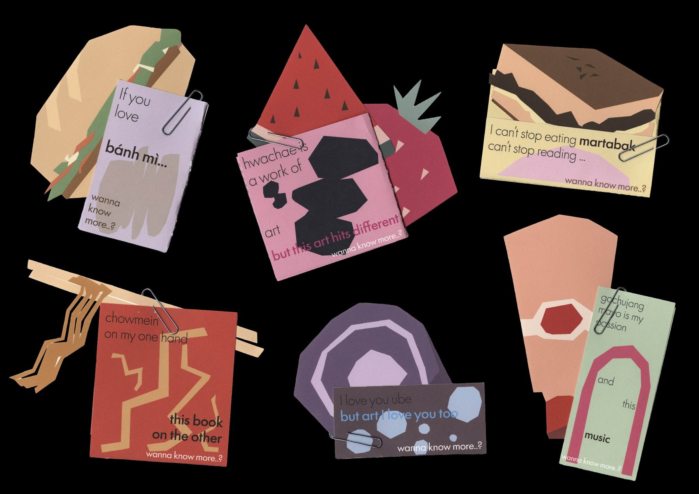
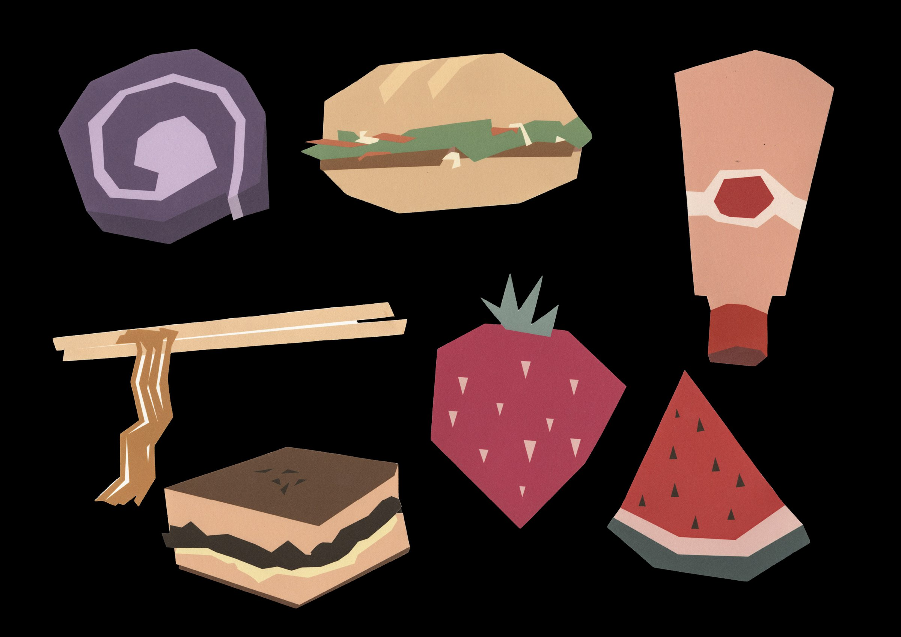
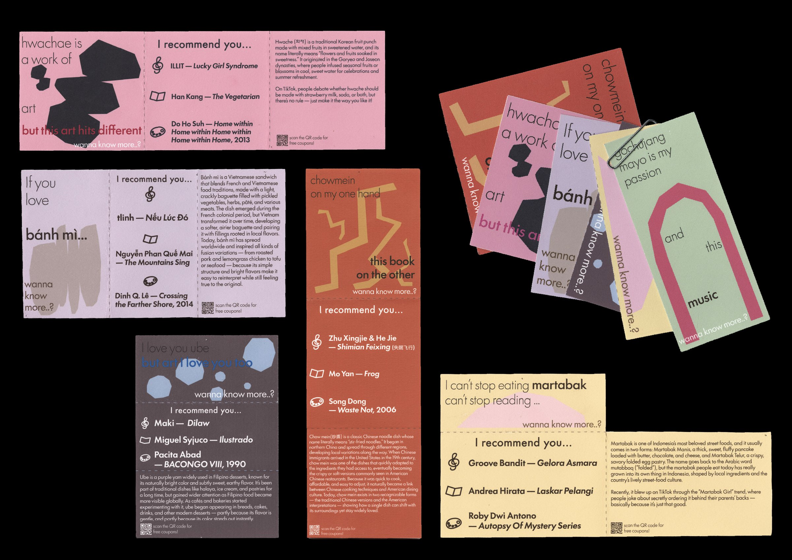
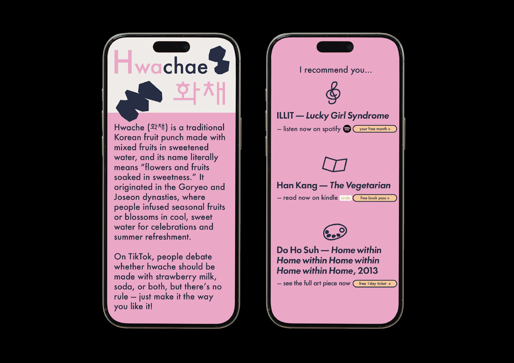

◀︎ Selected Work
03 — 2025
Take It
To Go
A set of delivery package tags built around the social-media moment of Asian food.
Each tag names a dish’s origin and pairs it with one piece of music, literature, and visual art from its home country; a QR code leads to a landing page with expanded context and resource access. The tags are designed to be cut and kept as bookmarks — a way to extend their presence beyond the meal itself.
The project uses the familiarity of takeout as an entry point for something less immediate: the history and aesthetic tradition behind what’s being consumed, with the hope that a small object, handed over with an order, might stick around long enough to make that distance feel crossable.




Info